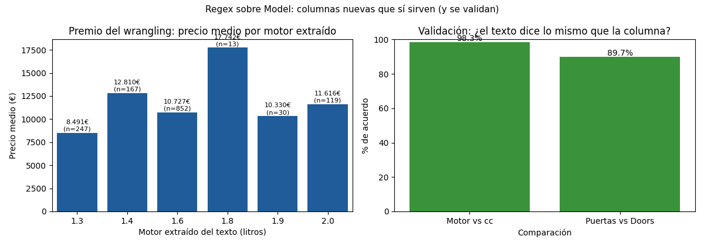

Unidad 2 · Exploración de datos · Lección 0005
Wrangling y regex: exprimir la columna Model
Win de hoy: extraer motor y puertas del texto de Model con
regex,
crear columnas nuevas y validarlas contra cc y Doors (98,8 % y 89,7 % de acuerdo).
1 · Wrangling: domar el texto hasta que analice
Wrangling
es el paso entre “datos crudos” y “datos analizables”: recortar, separar, convertir y reordenar hasta que cada
columna tenga un formato útil. La columna Model es el caso perfecto: guarda motor, carrocería y
puertas… pero todo mezclado en una frase. Hoy la desenredamos con el accesorio
.str
de pandas y un patrón regex.
Anatomía de un Model típico (hay 319 textos distintos; este es el más común, 109 autos):
TOYOTA Corolla 1.6 16V HATCHB LINEA TERRA 2/3-Doors
^^^ ^^^^^^^^^
motor puertas2 · Regex mínimo para este caso: (\d\.\d)
Un patrón regex describe la forma del texto buscado, no el texto exacto. Para el motor
(“1.6”, “2.0”, “1.3”…): un dígito, un punto, un dígito. Se escribe (\d\.\d):
\d= “cualquier dígito (0–9)”.\.= “un punto literal” (con backslash, porque el punto solo significa “cualquier cosa”).(…)= “esto es lo que quiero capturar y quedarme”.
import pandas as pd
df = pd.read_csv("../ToyotaCorolla.csv")
m = df["Model"].str.lstrip("?") # sin el ? de la 0004
df["motor_txt"] = m.str.extract(r"(\d\.\d)")[0]
print(df["motor_txt"].value_counts())
# 1.6 852
# 1.3 247
# 1.4 167
# 2.0 119
# 1.9 30
# 1.8 13Cobertura: 1428 de 1436 (99,4 %).
Las 8 que faltan usan formatos raros (ej. "1 6-16v" con espacio en vez de punto): quedan como
NaN honesto. Regla: un NaN que dice “acá no pude” vale más que un invento.
3 · Segundo rescate: las puertas del texto
El final del texto trae las puertas en tres dialectos: 2/3-Doors (620 autos),
4/5-Doors (724) y 5DR (89); 92 filas (furgones VERSO/MPV) no traen patrón.
Traducimos: “2/3” → 3 puertas, “4/5” y “5DR” → 5:
import numpy as np
df["puertas_txt"] = np.select(
[m.str.contains("2/3-Doors", regex=False),
m.str.contains("4/5-Doors", regex=False),
m.str.contains("5DR", regex=False)],
[3, 5, 5], default=np.nan)
print(df["puertas_txt"].notna().sum()) # 1344 de 1436 (93,6 %)Doors = 4 y los LIFTB tienen 5. El regex extrae; el conocimiento
del negocio interpreta. Por eso el paso siguiente (validar) no es opcional.4 · Validar: el texto contra la columna numérica
¿Cómo sabemos que extrajimos bien? El dataset trae la respuesta por otro camino: cc y
Doors. Si motor × 1000 coincide con cc, la extracción es buena:
acuerdo_cc = (((df["motor_txt"].astype(float) * 1000).round(0) == df["cc"])).mean() * 100
print(f"Motor vs cc: {acuerdo_cc:.1f}%") # 98.8% (1411 de 1428)
val = df["puertas_txt"].notna()
print(f"Puertas vs Doors: {(df.loc[val, 'puertas_txt'] == df.loc[val, 'Doors']).mean()*100:.1f}%")
# 89.7% (1206 de 1344; el resto son los SEDAN ambiguos)98,8 % y 89,7 %: dos columnas nuevas, validadas, nacidas de una frase. Y el premio: el motor extraído explica precio (un 1.8 promedia 17.742 €, un 1.3 apenas 8.491 €). Eso es wrangling que paga.
5 · Figura: el premio y la validación

Regenerar la figura (mismo resultado versionado en assets/img/toyota/):
python scripts/make_figures.py --only wrangling-regex-model6 · Quiz (auto-chequeo inmediato)
7 · Fuente primaria y cierre
Para profundizar (1 fuente):
McKinney, Python for Data Analysis — capítulos de limpieza y métodos de texto vectorizados
(.str.extract, .str.contains)
(wesmckinney.com/book, también en
RESOURCES.md del curso).
¿Algo no quedó claro? Preguntame al agente: cómo leer un patrón regex pieza por pieza,
cuándo conviene extract vs contains, o cómo validar tu propia extracción.
Esa pregunta vale más que releer.